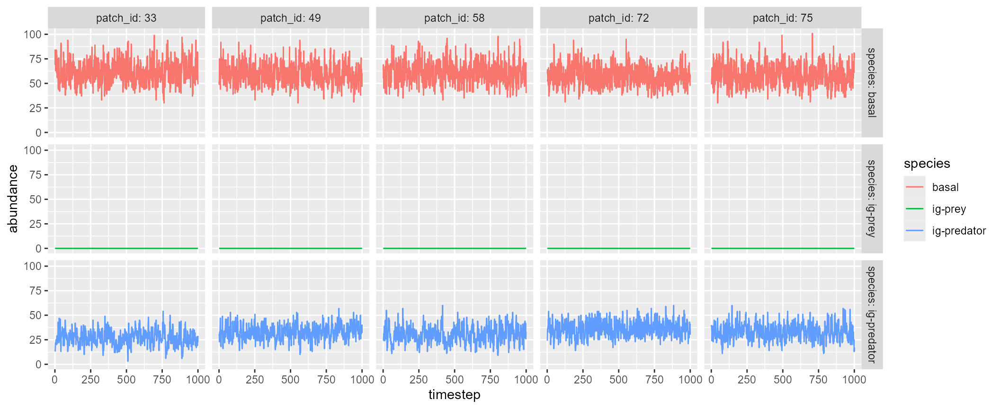

Basic usage
igpsim() simulates tri-trophic food web dynamics with
intraguild predation in space. The function employs a discrete
time-series model (an extension of the Nicholson-Bailey model), which is
detailed in Pomeranz
et al. 2023. The food web dynamics are simulated through (1) local
predator-prey interactions within a habitat patch, (2) immigration, and
(3) emigration.
The function returns:
-
df_dynamicsdata frame containing simulated food web dynamics*.-
timestep: time-step. -
patch_id: patch ID. -
carrying_capacity: carrying capacity at each patch. -
disturbance: disturbance-induced mortality at patch x and time-step t. -
species: species ID. -
abundance: abundance of species i at patch x. -
fcl: food chain length
-
-
df_speciesdata frame containing species attributes.-
species: species ID. -
mean_abundance: mean abundance (arithmetic) of species i across sites and time-steps. -
p_dispersal: dispersal probability of species i.
-
-
df_patchdata frame containing patch attributes.-
patch_id: patch ID. -
fcl: temporal average of food chain length. -
carrying_capacity: carrying capacity at each patch. -
disturbance: disturbance-induced mortality at each patch.
-
-
df_intdata frame containing interaction parameters.-
interaction: column identifying interaction pairs -
conv_eff: conversion efficiency -
attak_rate: attack rate -
handling_time: handling time
-
df_xy_coordxy coordinates for habitat patches (NULLwhendistance_matrixordispersal_matrixis provided)distance_matrixdistance matrix used in the simulation.
Quick start
The following script simulates tri-trophic dynamics with
n_patch = 5, which assumes five habitat patches randomly
distributed over a square space. By default, igpsim()
simulates food web dynamics with 200 warm-up (initialization with
species introductions: n_warmup), 200 burn-in (burn-in
period with no species introductions: n_burnin), and 1000
time-steps for records (n_timestep).
igp <- igpsim(n_patch = 5)As in mcsim(), the simulated dynamics can be visualized
by plot = TRUE, which will show five sample patches:
igp <- igpsim(n_patch = 5, plot = TRUE)
A named list of return values:
igp
#> $df_dynamics
#> # A tibble: 15,000 × 7
#> timestep patch_id carrying_capacity disturbance species abundance fcl
#> <dbl> <dbl> <dbl> <dbl> <fct> <dbl> <dbl>
#> 1 1 1 100 0 basal 52 2
#> 2 1 1 100 0 ig-prey 0 2
#> 3 1 1 100 0 ig-predator 23 2
#> 4 1 2 100 0 basal 56 2
#> 5 1 2 100 0 ig-prey 0 2
#> 6 1 2 100 0 ig-predator 42 2
#> 7 1 3 100 0 basal 73 2
#> 8 1 3 100 0 ig-prey 0 2
#> 9 1 3 100 0 ig-predator 34 2
#> 10 1 4 100 0 basal 105 1
#> # ℹ 14,990 more rows
#>
#> $df_species
#> # A tibble: 3 × 3
#> species mean_abundance p_dispersal
#> <fct> <dbl> <dbl>
#> 1 basal 66.6 0.1
#> 2 ig-prey 0 0.1
#> 3 ig-predator 25.4 0.1
#>
#> $df_patch
#> # A tibble: 5 × 4
#> patch_id fcl carrying_capacity disturbance
#> <dbl> <dbl> <dbl> <dbl>
#> 1 1 2.00 100 0
#> 2 2 2 100 0
#> 3 3 2 100 0
#> 4 4 1.92 100 0
#> 5 5 1.85 100 0
#>
#> $df_int
#> # A tibble: 3 × 4
#> interaction conv_eff attack_rate handling_time
#> <chr> <dbl> <dbl> <dbl>
#> 1 ig-prey on basal 0.9 0.05 0.5
#> 2 ig-predator on basal 0.9 0.05 0.5
#> 3 ig-predator on ig-prey 0.9 0.05 0.5
#>
#> $df_xy_coord
#> # A tibble: 5 × 2
#> x_coord y_coord
#> <dbl> <dbl>
#> 1 9.09 1.76
#> 2 9.21 6.38
#> 3 8.02 8.01
#> 4 2.01 8.72
#> 5 1.98 3.39
#>
#> $distance_matrix
#> 1 2 3 4 5
#> 1 0.000000 4.620888 6.343422 9.929323 7.294714
#> 2 4.620888 0.000000 2.021374 7.569156 7.819384
#> 3 6.343422 2.021374 0.000000 6.047221 7.598888
#> 4 9.929323 7.569156 6.047221 0.000000 5.327876
#> 5 7.294714 7.819384 7.598888 5.327876 0.000000Custom: brnet() + igpsim()
brnet() outputs are compatible with
igpsim(). For example, .$distance_matrix may
be used to inform arguments in igpsim(). By providing the
distance matrix, the following script will simulate food web dynamics in
a random branching network produced by brnet()
function:
patch <- 100
net <- brnet(n_patch = patch,
p_branch = 0.5)
igp <- with(net,
igpsim(n_patch = patch,
distance_matrix = distance_matrix,
plot = TRUE)
)
Custom: parameter detail
Users can tweak (1) food web attributes, (2) patch attributes, and (3) landscape structure.
Food web attributes
Arguments: r_b, conv_eff,
attack_rate, handling_time, s
Food web attributes are determined based on the maximum reproductive
rate of the basal species (r_b), conversion efficiency
conv_eff, attack rate attack_rate, handling
time handling_time, and switching parameter
s.
Basal species – r_b is one of the parameters
defining the population growth of the basal species, modeled as
follows:
where
is the abundance of the basal species at time
,
is the maximum growth rate (= r_b), and
is the carrying capacity (= carrying_capacity; see
Patch attributes). The parameters
and
may vary by habitat; to model such variations, users may supply vectors
of r_b and carrying_capacity, whose length is
equal to n_patch. The function assumes these values are
supplied in order of patch 1, 2, 3, …, n_patch. Thus, care
must be taken to match this order with those in, e.g.,
distance_matrix.
Consumers (intraguild prey and predator) – The predator-prey
interactions are modeled with the Nicholson-Bailey model, which was
extended to account for intraguild predation (see Pomeranz
et al. 2023, Ecosphere; equations 5 – 9 for details). The function
assumes the discrete version of the Holling’s Type-II functional
response, in which attack rate (atttack_rate) and handling
time (handling_time) define the survival function
of the prey as follows:
where
and
are the abundances of intraguild prey and predator, respectively,
the attack rate of consumer
on prey
(= attack_rate), and
the handling time (= handling_time). If these arguments are
supplied as scalars, then the function assumes the constant values for
all the interactions (i.e.,
and
).
Where appropriate, users may apply different values to these by
supplying vectors; in this case, the function assumes the parameter
values appear in order of
(),
(),
and
().
The parameter
quantifies the switching tendency of the intraguild predator, defined as
follows:
The parameter
(= s) determines the likelihood of switching to the basal
species, with higher values of
indicating the greater switching tendency to the basal species. Lastly,
conversion efficiency (= conv_eff) quantifies the
effectiveness of consumers transforming the capture prey into consumer’s
abundance. conv_eff must be a scalar (supply identical
values to all the interactions) or must be supplied in order of
,
,
and
.
Note that the function assumes the following order of ecological events: ’s reproduction ’s predation on ’s reproduction ’s predation on and ’s reproduction.
Patch attributes
Arguments: carrying_capacity
p_disturb, i_disturb,
phi_disturb
Patch attributes are characterized by carrying capacity (=
carrying_capacity) and disturbance (probability of
occurrence = p_disturb, disturbance intensity =
i_disturb, temporal precision of disturbance intensity =
phi_disturb). carrying_capacity and
i_disturb can be supplied as patch specific values,
provided that the vector lengths match n_patch. The other
arguments p_disturb and phi_disturb should be
given as scalars. p_disturb controls how often disturbance
occurs, while phi_disturb regulates the temporal
variability of the disturbance intensity when it occurs (greater values
of phi_disturb indicating less
temporal variability).
Note that disturbance events in this function is designed to resemble
regional disturbance, which affects all habitat patches when it occurs.
Thus, disturbance heterogeneity within a landscape should be introduced
through i_disturbance argument if desired.
Landscape attributes
Arguments: xy_coord,
distance_matrix, landscape_size,
theta
See Article for mcsim()
Model description
Full model descriptions are available at Pomeranz et al. 2023, Ecosphere.